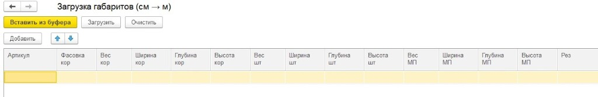

1С:Бухгалтерия
Бухгалтерский и налоговый учёт, регламентированная отчётность, обмен с банками и ФНС. Настройка под учётную политику компании.
ИнтелАв
Внедрение современных подходов и программ для учёта, управления и сопровождения бизнеса.
Повышаем прозрачность учёта и эффективность процессов на платформе 1С:Предприятие
Продукты 1С
Бухгалтерский и налоговый учёт, регламентированная отчётность, обмен с банками и ФНС. Настройка под учётную политику компании.
Кадровый учёт, расчёт зарплаты, отпускные, больничные и кадровый ЭДО. Автоматизация HR-процессов без ручных таблиц.
Продажи, закупки, склад и ценообразование. Управление торговыми процессами и аналитика по номенклатуре и клиентам.
Единый контур торговли, производства, склада и финансов для среднего бизнеса без избыточной сложности ERP.
Комплексное управление предприятием: производство, склад, продажи, финансы. Доработки и интеграции под специфику компании.
Маршруты согласования, архив, контроль исполнения и единое пространство документов для команд и подразделений.
Услуги
Исправление ошибок, восстановление баз, доработки конфигураций, обучение пользователей «с нуля», сопровождение нетиповых баз, аудит учёта и настроек, миграции.
Полноценный проект внедрения с обследованием, ТЗ, этапами и запуском под процессы клиента.
| Наименование специалиста | Проектные работы | Почасовые работы | Аутстафф (загрузка от 2 мес. 100%) |
|---|---|---|---|
| Разработчик | 4 000/час | 3 000/час | 3 000/час–5 500/час |
| Консультант | 4 000/час | 3 000/час | 3 000/час–5 500/час |
Точная стоимость зависит от объёма, формата работ и уровня специалиста — рассчитаем в заявке.
ИТС — это комплексная поддержка, которую фирма «1С» совместно с официальными партнёрами предоставляет пользователям программных продуктов «1С:Предприятие». Договор позволяет получать официальную поддержку программ «1С:Предприятие», использовать информационную систему 1С:ИТС — методические материалы, справочники по учёту, налогам, кадрам, ответы экспертов, сервисы и консультации фирмы «1С».
*услуги и сервисы зависят от тарифа
| Вид заключаемого договора | Рекомендованная стоимость* |
|---|---|
| ИТС ПРОФ | 38 000 руб. |
| ИТС Бюджет ПРОФ | 38 000 руб. |
| ИТС Строительство | 52 552 руб. |
| ИТС Медицина | 42 008 руб. |
| ИТС Ритейл ПРОФ | 42 864 руб. |
*Рекомендованная стоимость льготного договора 1С:ИТС на 12 месяцев по схеме 8+4
| Стоимость | 1 мес. | 3 мес. | 6 мес. | 12 мес. | 24 мес.* |
|---|---|---|---|---|---|
| Рекомендованная цена | 9 301 руб. | 20 104 руб. | 36 307 руб. | 68 400 руб. | — |
| Льготная цена (при непрерывном продлении договора ИТС) | 7 751 руб. | 16 755 руб. | 30 259 руб. | 57 000 руб. | 102 600 руб. |
Автоматическое заполнение реквизитов и проверка информации о контрагентах
Подготовка и сдача регламентированной отчётности в контролирующие органы
Обмен юридически значимыми документами в электронном виде из программ 1С
Справочники, консультации по законодательству, методики и инструкции
Семинары по законодательству и его отражению в программах 1С
Корпоративный чат и оперативная поддержка пользователей программ 1С
Поиск, загрузка и актуализация карточек товаров и услуг
Оценка надёжности контрагентов и мониторинг изменений
Автоматическая сверка счетов-фактур с контрагентами
Прямой обмен с банком из программы 1С без клиент-банка
Резервное копирование информационных баз в облако
Обучение работе с программами 1С и развитию компетенций пользователей
| Стоимость | 6 мес. | 12 мес. |
|---|---|---|
| Рекомендованная цена | 15 334 руб. | 29 004 руб. |
| Льготная цена (при непрерывном продлении договора ИТС) | 12 781 руб. | 24 168 руб. |
Проекты
От анализа процессов и проектирования до запуска, доработок и поддержки. Ниже — типовые сценарии наших проектов.
Единый контур производства, склада и финансов. Сокращение ручных операций и прозрачный управленческий учёт.
Перенос процессов и данных, обучение пользователей, поэтапный запуск без остановки ключевых операций.
Обмен с сайтами, ЭДО, отраслевыми сервисами и внутренними системами. Стабильная связка вместо разрозненных Excel.
О компании

ИнтелАв — партнёр сети «1С:Франчайзинг».
ИнтелАв — имеет статус «1С:Франчайзинг».
Команда, которая более 10 лет разрабатывает комплексные решения для автоматизации бизнеса на платформе 1С.
Мы сопровождаем проекты полного цикла: от анализа процессов и проектирования до внедрения, доработок и поддержки. В работе опираемся на практику реальных внедрений и знание отраслевой специфики — от типовых конфигураций до сложных интеграций и нестандартных задач.
В штате — сертифицированные специалисты 1С: разработчики, консультанты и руководители проектов. Это позволяет держать качество под контролем на каждом этапе и отвечать за результат, а не только за отдельные задачи.
Наша цель — дать бизнесу устойчивую и понятную систему учёта и управления, которая работает стабильно и развивается вместе с компанией.
О компании
Партнёрские и франчайзинговые сертификаты ИнтелАв и ИП Вагапов. Нажмите, чтобы открыть полный PDF.
О компании
Сертифицированные специалисты 1С — продажи, внедрение и сопровождение проектов.
Генеральный директор компании
Более 20 лет опыта в области автоматизации предприятий. Имеет компетенции в разработке и управлении проектами, что подтверждается наличием сертификатов.
Под его руководством компания развивает направления внедрения, доработки и сопровождения конфигураций 1С.
Руководитель отдела продаж
Более 12 лет в сфере автоматизации бизнеса. Специализируется на продаже и сопровождении проектов на базе 1С — от первого контакта до запуска решения у заказчика.
Консультант 1С
Превращает задачи бизнеса в работающие решения на платформе 1С:Предприятие 8.3.
Проводит обследование процессов заказчика, выявляет узкие места, разрабатывает методологии учёта и регламентов работы в 1С, формирует технические задания для разработчиков.
Разработчик 1С
Имеет большой опыт доработки конфигураций 1С и тестирования работоспособности.
Специализируется на конфигурациях 1С:Документооборот, 1С:Бухгалтерия, 1С:Комплексная автоматизация, 1С:Зарплата и управление персоналом.
Разработчик 1С
Стаж разработки — более 5 лет.
Специалист по платформе 1С:Предприятие с опытом доработки типовых, нетиповых и самописных конфигураций.
Ключевые компетенции: СКД и сложные запросы, внешние обработки и отчёты, доработки учёта, администрирование СУБД, анализ и сопровождение сложного кода в конфигурациях 1С:ERP, 1С:Управление торговлей, 1С:Зарплата и управление персоналом, 1С:Бухгалтерия, 1С:WMS.
Разработчик 1С
Опыт коммерческой разработки более 5 лет.
Специалист с уверенным владением платформой 1С:Предприятие и опытом работы с типовыми и самописными конфигурациями. Глубокое понимание подсистем бюджетирования, планирования и ценообразования, уверенное написание сложных запросов на языке запросов 1С.
Разработчик 1С
Сертифицированный специалист 1С:Предприятие с большим опытом сложной доработки типовых и самописных конфигураций.
Сильная сторона — сложная аналитика, интеграция, обмены. Большой опыт разработки по конфигурациям 1С:ERP, 1С:Документооборот, 1С:Бухгалтерия, 1С:Зарплата и управление персоналом различных редакций.
Разработчик 1С
Более 10 лет занимается разработкой и доработкой различных конфигураций 1С.
Прошёл обучение и успешно сдал экзамены 1С:Профессионал: 1С:Управление торговлей 11 и «1С:Специалист-консультант» по внедрению прикладного решения «1С:Управление торговлей 8».
Ключевые компетенции: создание и оптимизация отчётов, обработок и печатных форм; интеграция 1С с внешними системами через веб-сервисы; анализ требований и разработка технических решений; оптимизация производительности и поиск ошибок.
Разработчик 1С
Специалист 1С:Предприятие с опытом более 5 лет в автоматизации. Экспертиза по конфигурациям: 1С:ERP, 1С:УНФ, 1С:Документооборот, 1С:WMS.
Автоматизирует процессы e-commerce и выстраивает устойчивые интеграции 1С с маркетплейсами на базе API.
Программист 1С
Опыт разработки более 2 лет. Обладает экспертизой в автоматизации торговой деятельности, складского учета и оптимизации бизнес-процессов.
Сертифицированный специалист по «1С:Профессионал» 1С:Документооборот.
Обладает уверенным пониманием внутренних механизмов работы платформы «1С:Предприятие 8». Имеет успешный опыт как развития и поддержки нетиповых (самописных) конфигураций, так и адаптации типовых решений под специфику бизнеса. Владеет языком запросов, механизмом компоновки данных (СКД) и инструментами оптимизации производительности. Способен эффективно переводить требования бизнеса на технический язык и создавать отказоустойчивую архитектуру.
Программист 1С
Более 2 лет занимается разработкой на платформе 1С:Предприятие 8.3. Уверенно работает с конфигурацией 1С:Управление торговлей, имеет сертификат «1С:Профессионал» по технологическим вопросам.
Специализируется на доработке типовых и нетиповых конфигураций, написании сложных запросов, создании внешних отчётов и обработок, оптимизации кода и тестировании работоспособности решений. Быстро разбирается в задачах бизнеса и оперативно осваивает новые технологии.
Тестировщик 1С
С опытом работы более 2 лет. Специализируется на функциональном и нагрузочном тестировании самописных и типовых решений. Отвечает за финальную проверку конфигурации перед релизами, проектирует сценарии тестирования и выявляет технические или логические ошибки системы. Главная задача Никиты — гарантировать, что готовый продукт соответствует ТЗ и четко решает бизнес-задачи заказчика.
Практика
Материалы о наших доработках и решениях для клиентов.
В 1С:УТ настроили сквозную обработку заказов OZON, Wildberries и Яндекс Маркета по схеме FBS: от загрузки с площадки до сборки и печати этикетки.
На каждое отправление оператор в УТ вручную искал остатки, создавал заказ клиента и менял статус на торговой площадке — около 30 секунд на заказ. На пакете из 300 отправлений это ~2,5 часа. Кладовщик печатал логистическую этикетку примерно 30 секунд на заказ.
После обмена с маркетплейсом заказы автоматически собираются в пакетный заказ клиента. Остатки и обеспечение отрабатывает система. Оператор подтверждает весь пакет из рабочего места — около 2 минут на 300 заказов. На АРМ кладовщика: скан → сборка → печать этикетки за ~5 секунд вместо 30.
Рутина поштучной обработки ушла в пакетный контур внутри 1С:УТ. Тот же объём FBS закрывается без пропорционального роста штата.
В типовых решениях 1С уже есть интеграция с Ozon — например, в 1С:ERP, 1С:УТ и 1С:КА. Однако при большом ассортименте и сложной организации складского учёта стандартного функционала может быть недостаточно. Мы доработали типовой модуль Ozon, сделав выгрузку остатков более гибкой и удобной для ежедневной работы.
Гибкая настройка выгрузки остатков. Добавлены фильтры по списку назначений, списку характеристик, а также нижний и верхний пороги остатков. Это позволяет точнее управлять тем, какие товары и в каком количестве передаются на Ozon.
Пакетное управление ограничениями выгрузки. Добавлена возможность массового заполнения и удаления данных в регистре товаров, которые не нужно выгружать на Ozon. Также для склада можно установить настройку, при которой по всему его ассортименту на Ozon принудительно выгружается остаток 0. Это значительно упрощает работу с большим количеством товаров и позволяет быстро управлять выгрузкой целого склада без изменения фактических остатков в 1С.
Разделение складов. Добавлена возможность разделять склады на габаритные и крупногабаритные. В стандартном механизме несколько складов Ozon нельзя корректно сопоставить с одним складом в 1С, хотя физически товар может храниться в одном месте. Доработка позволяет учитывать такую структуру и корректно распределять остатки.
В результате типовой обмен с Ozon становится более адаптированным под реальную структуру складов и большой ассортимент, а значительная часть ручной работы при настройке выгрузки остатков переносится в автоматизированные операции.
Быстрая актуализация данных без ручного ввода

Карточки номенклатуры в 1С часто содержат десятки и сотни упаковок: штуки, коробки, упаковки маркетплейсов. Обновлять ширину, глубину, высоту и вес вручную — долго и легко ошибиться.
Мы разработали внешнюю обработку, которая позволяет массово обновлять габариты и вес упаковок прямо из Excel: скопировали таблицу — вставили в 1С — загрузили. Конфигурацию менять не нужно: решение подключается как дополнительная обработка.
Экономия времени. Вместо открытия сотен карточек и правок полей — одна операция по списку. Часы ручной работы сокращаются до минут.
Меньше ошибок. Нет повторного набора цифр «на глаз»: данные идут из единой таблицы-источника, результат контролируется журналом.
Гибкость обновлений. Можно обновить только то, что изменилось: например, одну ширину или только вес. Пустые и нулевые значения в базу не записываются — уже заполненные данные не затираются.
Безопасная точечная работа. Обработка не создаёт лишние объекты «на всякий случай»: обновляет существующие упаковки по понятным правилам поиска (артикул, наименование, фасовка коробки).
Это практичный инструмент для повседневной работы с НСИ: меньше рутины, быстрее актуализация справочника, выше качество данных в учёте и логистике — без доработки основной конфигурации и без остановки пользователей.
Раньше выгрузка этикеток кодов маркировки (КиЗ) занимала много времени: большие партии нужно было печатать и сохранять по частям, ждать отклика системы и разбираться, если процесс обрывался. На тысячах кодов это легко превращалось в долгую рутину и риск ошибиться с файлами.
Мы добавили в рабочее место простую кнопку «Сформировать PDF пакетно». Пользователь подтверждает действие — и система сама собирает этикетки в готовые PDF-файлы по артикулам, показывает ход работы и предлагает сохранить всё в выбранную папку. Можно продолжать работать с базой, пока файлы формируются в фоне.
На партиях в сотни и тысячи кодов ручная схема часто занимала от 20–40 минут и больше (с пересохранениями и проверками). С пакетной выгрузкой тот же объём обычно укладывается в несколько минут — примерно в 5–10 раз быстрее, плюс меньше нервов и ручных ошибок.
Результат — этикетки готовы к печати вовремя, сотрудники тратят время на работу с товаром, а не на ожидание и возню с файлами.
В 1С:УТ закрыли цепочку «выкуп → заявка на возврат → возврат → корректировочный счёт‑фактура» с контролем остатка по выкупу и выгрузкой в обмен как обычной реализации.
Выкуп хранителем нельзя было штатно взять основанием для заявки и возврата. Документы собирали вручную, остаток «что ещё можно вернуть» считали глазами по уже оформленным заявкам и возвратам, ГТД требовали даже там, где учёт по ГТД не ведётся. Корректировочный СФ и печать УКД по такой цепочке ломались: колонка «до изменения» и привязка к исходному СФ не сходились. В обмен выкуп либо не уходил, либо уходил не как реализация — бухгалтерия дотягивала руками.
Из проведённого выкупа создаётся заявка на возврат с товарами и остатком к возврату. Система не даёт вернуть больше, чем осталось (с учётом открытых заявок и уже оформленных возвратов). ГТД обязателен только у номенклатуры с учётом по ГТД. Возврат, виды запасов, КСФ и печать УКД отрабатывают по выкупу; в универсальном обмене выкуп уходит как реализация товаров и услуг, возврат ссылается на этот документ.
Оформление возврата из выкупа стало штатным внутри 1С:УТ: меньше ручной сборки документов, меньше ошибок по остатку и ГТД, цепочка до печати и обмена без обходных схем.
При работе с системой электронного документооборота Диадок и 1С:ERP Управление предприятием часто возникает задача синхронизации подписанных документов между системами. Одной из таких задач является автоматическое сохранение универсальных передаточных документов (УПД) из Диадок в СканАрхив — компоненте системы документооборота 1С.
До внедрения автоматизации процесс выглядел следующим образом:
Масштаб проблемы:
Для устранения указанных проблем был разработан автоматизированный механизм, реализованный в виде общего модуля СканАрхив_пт.
| Показатель | До автоматизации | После автоматизации |
|---|---|---|
| Временные затраты | Часы ручной работы | Минуты фонового выполнения |
| Человеческий фактор | Высокий риск ошибок | Исключён |
| Масштабируемость | Ограничена ресурсами оператора | Неограниченно |
| Надёжность | Зависит от человека | Детерминированный процесс |
Разработанный механизм позволяет эффективно решать задачу массового переноса УПД из Диадок в 1С:ERP, устраняя как временные затраты, так и риск ошибок, связанных с человеческим фактором. Использование регламентных заданий и механизма входящих сообщений обеспечивает стабильную работу системы даже при больших объёмах обрабатываемых документов.
Нужно было вытянуть коды маркировки из XML — обычно это счёт-фактура или УПД, где марки лежат в таблице товаров. Обработку можно было написать руками: пройти известные теги и забрать значения. Так и делают, пока схема не меняется.
У Честного знака и в выгрузках ЭДО поля живут недолго. Сегодня код в одном узле, завтра в другом, после обновления формата — ещё на уровень глубже или под другим именем. Жёсткая привязка к конкретным тегам каждый раз ломается, и разработку приходится переписывать.
Поэтому пошли не через карту полей, а через содержимое. ИИ хорошо подходит, когда правило стабильное, а оболочка нет: код маркировки выглядит как КИЗ (01…) или SSCC (00…), его можно проверить по длине и алфавиту и не важно, в каком теге он лежит.
За короткое время собрали простую внешнюю обработку 1С. Она читает XML, берёт табличную часть документа и обходит текст на всех уровнях вложенности. Подходящие под валидацию ключи собираются без дублей и записываются в штрихкоды упаковок выбранного документа.
Материалы подраздела появятся здесь позже.
О компании
Расскажите о задаче — вернёмся с коммерческим предложением